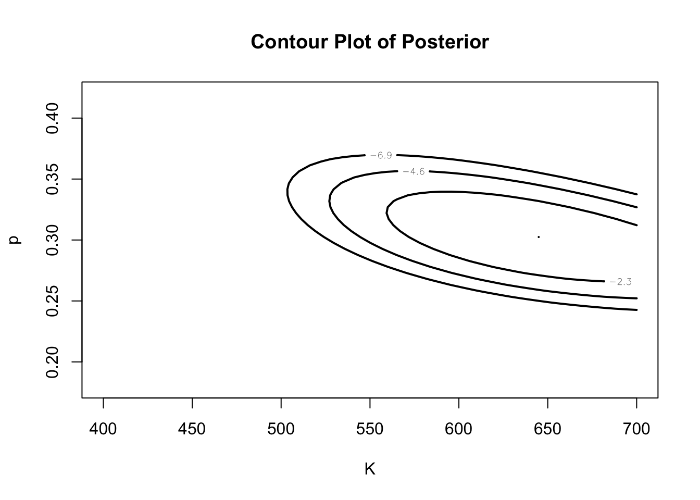

In this chapter, we illustrate Bayesian learning from several two parameter problems. Building on the one-parameter posteriors of Chapter 4, we first illustrate learning about both parameters of the normal density with noninformative and informative priors. To compare two independent Poisson samples, we illustrate computing the marginal posterior density of the ratio of Poisson means. Last, we illustrate learning about both the sample size and the probability of success for binomial data where only the number of successes is observed. In this final example, we illustrate constructing a dependent prior for the two parameters in a baseball setting where historical data is available.
7.2 Normal Sampling with Both Parameters Unknown
7.2.1 Noninformative Prior
Suppose we observe \(y_1, ..., y_n\) from a normal distribution with mean \(\mu\) and variance \(\sigma^2\), where both parameters are unknown. We assume that we have little prior knowledge about the location of either the mean or the variance, and so we assign \((\mu, \sigma^2)\) the usual noninformative prior \[
g(\mu, \sigma^2) = \frac{1}{\sigma^2}.
\]
Before we consider this situation, let’s review some results from the previous chapter.
Suppose we wish to learn about the normal mean \(\mu\) when the variance \(\sigma^2\) is assumed known. If we assign \(\mu\) the noninformative uniform prior, then the posterior distribution for \(\mu\) is normal with mean \(\bar y\) and variance \(\sigma^2/n\).
Suppose instead that we are interested in the variance \(\sigma^2\) when the mean \(\mu\) is known and the typical noninformative prior of the form \(1/\sigma^2\) is assigned to the variance. Then \(\sigma^2\) is distributed \(S \chi^{-2}_v\) where \(v=n\) and \(S = \sum_{i=1}^n (y_i-\mu)^2\). \end{enumerate}
In the general case where both parameters are unknown, the likelihood function is given by \[\begin{eqnarray*}
L(\mu, \sigma^2) = \prod_{i=1}^n \frac{1}{\sqrt{2 \pi \sigma^2}} \exp\left(-\frac{1}{2 \sigma^2} (y_i - \mu)^2\right) \nonumber \\
\propto \frac{1}{(\sigma^2)^{n/2}} \exp\left(-\frac{1}{2 \sigma^2} \sum_{i=1}^n (y_i - \mu)^2\right) \nonumber \\
\end{eqnarray*}\] If the likelihood is combined with the noninformative prior, we obtain the joint posterior density \[\begin{eqnarray*}
g(\mu, \sigma^2 | y) \propto \frac{1}{(\sigma^2)^{n/2+1}} \exp\left(-\frac{1}{2 \sigma^2} \sum_{i=1}^n (y_i - \mu)^2\right) \nonumber \\
\end{eqnarray*}\] Suppose one subtracts and adds the sample mean \(\bar y = \frac{1}{n} \sum_{i=1}^n y_i\) in the expression \(\sum_{i=1}^n (y_i - \mu)^2\). Then one obtains the identity \[
\sum_{i=1}^n (y_i - \mu)^2 = \sum_{i=1}^n (y_i - \bar y)^2 + n (\mu - \bar y)^2 .
\] Using this identity and rearranging some terms, one obtains the following representation of the joint posterior density: \[\begin{eqnarray*}
g(\mu, \sigma^2 | y) \propto \frac{1}{(\sigma^2)^{1/2}} \exp\left(-\frac{n}{2 \sigma^2} (\mu - \bar y)^2 \right)
\times \frac{1}{(\sigma^2)^{n/2}} \exp\left(-\frac{1}{2 \sigma^2} \sum_{i=1}^n (y_i - \bar y)^2\right). \nonumber \\
\end{eqnarray*}\]
What we have done is represent the joint posterior density as the product of terms \[
g(\mu, \sigma^2 | y) = g(\mu | \sigma^2, y) \times g(\sigma^2 | y) .
\] The first term in the product represents the posterior density of the mean \(\mu\) conditional on the variance \(\sigma^2\) – we recognize this as a normal density with mean \(\bar y\) and variance \(\sigma^2/n\). The second term in the product is proportional to the marginal posterior density of \(\sigma^2\). From our earlier work, we recognize this marginal density as the “scale times inverse chi-square” form \[
\sigma^2 \sim S \chi^{-2}_v,
\] where the degrees of freedom is \(v=n-1\) and the sum of squares \(S = \sum_{i=1}^n (y_i-\bar y)^2\). This posterior density is commonly called the {} distribution.
In this setting, typically one is interested in inferences about the normal mean \(\mu\) and we base this inference on its marginal posterior density. This is obtained by integrating out \(\sigma^2\) from the joint density. Using our earlier expressions, we write this integral as \[
g(\mu | y) \propto \int_0^\infty \frac{1}{(\sigma^2)^{n/2+1}}
\exp\left(-\frac{1}{2 \sigma^2}\left[ S + (\mu - \bar y)^2 \right] \right) d\sigma^2.
\] At this point, it is helpful to recall the following integral identity for an inverse gamma integral \[
\int_0^\infty \frac{1}{y^{a+1}} \exp(-b y) dy = \frac{\Gamma(a)}{b^a} .
\] Since the above integral has this form with \[
a = n/2, \, \, b = S + (\mu - \bar y)^2,
\] we see the marginal posterior density for \(\mu\) is given by \[
g(\mu | y) \propto \frac{1}{(S + (\mu - \bar y)^2)^{n/2}},
\] which has the t functional form. After some manipulation, one can show that the standardized random variable \[
\frac{\sqrt{n}(\mu - \bar y)}{\sqrt{S/(n-1)}} = \frac{\sqrt{n}(\mu - \bar y)}{s},
\] where \(s\) is the sample standard deviation, has a standardized t distribution with \(n-1\) degrees of freedom.
This is a familiar result from sampling theory. If one samples from a normal population, then it is well-known that the “t-statistic” \[
T = \frac{\sqrt{n}(\bar y - \mu)}{s}
\] has a t distribution with \(n-1\) degrees of freedom. Our result switches the role of the data \(y\) and the parameter \(\mu\). Assuming the noninformative prior on \(\mu, \sigma^2\), the standardized marginal posterior of \(\mu\) (with \(y\) fixed) has the same t distribution.
What is the implication of this similarity of frequentist and Bayesian distribution results? It means that classical and Bayesian inferential procedures will agree in this setting. For example, suppose one is interested in a 95% interval estimate for the mean \(\mu\). Then standard frequentist interval has the form \[
\left(\bar y - t_{n-1, .025}\frac{s}{\sqrt{n}}, \bar y + t_{n-1, .025}\frac{s}{\sqrt{n}}\right),
\] where \(t_{n-1, .025}\) is the upper .025 quantile of a t distribution with \(n-1\) degrees of freedom. In repeated sampling from a normal distribution, this interval will have 95% frequentist coverage. This is equivalant to saying that \[
P^{Data}\left(\bar y - t_{n-1, .025}\frac{s}{\sqrt{n}} < \mu < \bar y + t_{n-1, .025}\frac{s}{\sqrt{n}}\right) = 0.95,
\] where the probability is taken over the {} observations \(y_1, ..., y_n\). From a Bayesian viewpoint, one can say that \[
P^\mu\left(\bar y - t_{n-1, .025}\frac{s}{\sqrt{n}} < \mu < \bar y + t_{n-1, .025}\frac{s}{\sqrt{n}} | y \right) = 0.95,
\] This means that the posterior probability that \(\mu\) is contained in this fixed interval is 95%. The actual computed intervals of the standard frequentist and Bayesian procedures are identical. But the frequentist and Bayesian interpretations are very different. The frequentist statement refers to the characteristics of this interval in repeated sampling and the Bayesian statement refers to the property of this interval conditional on a particular set of observations \(y_1, ..., y_n\).
A similar correspondence is true for inferences about the normal variance \(\sigma^2\). We earlier noted that the marginal posterior density for the variance has the form \(\sigma^2 \sim S \chi^{-2}_{n-1}\). Equivalently, one can say that the posterior of the function \[
\frac{S}{\sigma^2} = \frac{\sum_{i=1}^n (y_i - \bar y)^2}{\sigma^2}
\] is chi-squared with \(n-1\) degrees of freedom. From a frequentist perspective, if \(\sigma^2\) is fixed, then the statistic \[
Y = \frac{\sum_{i=1}^n (y_i - \bar y)^2}{\sigma^2}
\] has a chi-square (\(n-1\)) sampling distribution. Again this correspondence means that Bayesian inferential statements about a variance (assuming a noninformative prior) will be numerically equivalent to the corresponding frequentist inferential statements. But the interpretation of these statements will be different. For an interval estimate, the posterior probability that a particular interval contains \(\sigma^2\) is the given level. In contrast, the “confidence” of the frequentist interval refers to the probability of containing the parameter in repeated sampling.
7.2.2 Using a Informative Prior
The form for the posterior distribution for \((\mu, \sigma^2)\) in the noninformative case suggests the form for an informative conjugate prior. We assume that the prior for the mean \(\mu\) conditional on the variance \(\sigma^2\) has a normal distribution with mean \(\mu_0\) and variance \(\sigma^2/n_0\). Then we assume the marginal prior on \(\sigma^2\) is distributed \(S_0 \chi^{-2}_{v_0}\).
How do we interpret these parameters?
The prior mean \(\mu_0\) is a guess at the normal mean and \(n_0\) is a number of “prior observations” representing the sureness of this guess.
A prior guess at the variance \(\sigma^2\) is \(S_0/v_0\) and \(v_0\) represents the precision of this guess expressed again in term of prior observations.
If we apply this prior density, then it can be shown that the posterior density for \((\mu, \sigma^2)\) has the same normal-inverse-chisquare form. First, if we condition on \(\sigma^2\), and combine the normal prior on \(\mu\) with the normal likelihood, then the posterior density of \(\mu\) is normal(\(\mu_1, \sigma^2/n_1\)), where \[
\mu_1 = \frac{n_0}{n_0 + n} \mu_0 + \frac{n}{n_0 + n} \bar y,
\] and \(n_1 = n_0 + n\). Second, one can show that \[
\sigma^2 \sim S_1 \chi^{-2}_{v_1},
\] where \(v_1 = v_0 + n\) and \[
S_1 = S_0 + S + \frac{n_0 n}{n_1} (\bar y - \mu_0)^2 .
\]
7.3 Comparing Two Poisson Means
In Chapter 4, we considered the problem of learning about the mean number of visits to a particular website during weekdays in Summer 2009. We only included the visit counts during the weekdays, since we suspected that there was a different pattern of visits between weekdays and weekends (Saturday and Sunday). We suspect that there are fewer visits on weekends, but would be interested in estimating the magnitude of the “weekend effect.”
Suppose we observe two independent Poisson samples. Counts {\(y_{Ai}\)} from the weekend days are assumed Poisson with mean \(\lambda_A\) and counts {\(y_{Bj}\)} from the weekday days are assumed Poisson with mean \(\lambda_B\). We are interested in learning about the ratio of means \[
\gamma=\frac{\lambda_B}{\lambda_A}.
\]
The first step is to find the likelihood of the parameters. Using the assumption of independence, the joint density of the counts {\(y_{Ai}\)} and {\(y_{Bj}\)} is given by \[
f(\{y_{Ai}\}, \{y_{Bj}\}|\lambda_A, \lambda_B) = \left(\prod_i\frac{ \lambda_A^{y_{Ai}}\exp(-\lambda_A)}{y_{Ai}!}\right)
\left(\prod_j\frac{ \lambda_B^{y_{Bi}}\exp(-\lambda_B)}{y_{Bj}!}\right).
\] Following the work in Chapter 4, the likelihood can be expressed as \[
L(\lambda_A, \lambda_B) = \exp(-n_A \lambda_A) \lambda_A^{s_A} \exp(-n_B \lambda_B) \lambda_B^{s_B},
\] where \(n_A\) and \(s_A\) are respectively the sample size and the sum of observations from the first sample, and \(n_B\) and \(s_B\) are the analogous quantities from the second sample.
Suppose we reparametrize the likelihood in terms of the first Poisson mean \(\theta = \lambda_A\) and the ratio of means \(\gamma=\frac{\lambda_B}{\lambda_A}\). Since \(\lambda_B = \theta \gamma\), the likelihood function in terms of the new parameters is given by \[
L(\theta, \gamma) = \exp(-n_A \theta) \theta^{s_A} \exp(-n_B (\theta\gamma)) (\theta\gamma)^{s_B}.
\]
Suppose prior information about the means is expressed through the parameters \(\theta\) and \(\gamma\). We assume that \(\theta\) and \(\gamma\) are independent with \[
\theta \sim Gamma(a_0, b_0), \, \, \gamma \sim Gamma(a_g, b_g).
\] Then the posterior density of \((\theta, \gamma)\) is given, up to a proportionality constant, by \[\begin{eqnarray*}
g(\theta, \gamma | {\rm data}) \propto \exp(-n_A \theta) \theta^{s_A} \exp(-n_B (\theta\gamma)) (\theta\gamma)^{s_B} \nonumber \\
\times \theta^{a_0-1} \exp(-b_0 \theta) \gamma^{a_g-1} \exp(-b_g \gamma) .\nonumber \\
\end{eqnarray*}\] Our interest is in the ratio of means \(\gamma\) and \(\theta\) is a nuisance parameter. We learn about \(\gamma\) by its marginal posterior density obtained from integrating out \(\theta\) from the joint posterior density. \[
g(\gamma | {\rm data}) = \int_0^\infty g(\theta, \gamma | {\rm data}) d\theta .
\] When one combines terms, one sees that, for a fixed value of \(\gamma\), the integral has a gamma form in \(\theta\). So one is able to analytically integrate out \(\theta\), resulting in the marginal posterior density \[
g(\gamma | {\rm data}) \propto \frac{\gamma^{s_B+a_g-1} \exp(-b_g \gamma)}{(n_A+n_B \gamma + b_0)^{s_A + s_B + a_0}}.
\]
In our example, we first construct priors for \(\theta\), the mean number of website visits during weekend days, and \(\gamma\), the ratio of the mean weekday visits and the mean weekday visits. We choose the independent priors \[
\theta \sim Gamma(2, 1), \, \, \gamma \sim Gamma(8, 8).
\] The prior for \(\theta\) reflects vague information about the mean number of visits during weekends, and the prior for \(\gamma\) reflects the belief that website visits for weekends and weekdays are similar in size.
Next, we observe the following individual counts of visits for \(n_A = 10\) weekend days and \(n_B = 21\) weekdays.
From these data, we compute \(s_A = 143\) and \(s_B = 486\). With the appropriate substitutions, the marginal posterior density of \(\gamma\) is given by \[
g(\gamma | {\rm data}) \propto \frac{\gamma^{486+8-1} \exp(-8 \gamma)}{(10 + 21 \gamma + 1)^{143 + 486 + 2}}.
\]
In summarizing this marginal posterior for \(\gamma\), we learn that the posterior mode is 1.66. So the website visits tend to be 66% higher on weekdays than on the weekends. In addition, a 90% interval estimate for \(\gamma\) is given by (1.44, 1.92). Since both values are larger than 1, one is pretty confident that there are more visits on weekdays than weekends.
7.4 Learning about a Sample Size and a Probability
In the game of baseball, a batter gets an opportunity at the plate called an {}. He wants to get a base hit and a standard measure of hitting performance is the batting average \[
AVG = \frac{H}{AB},
\] where \(H\) is the number of hits and \(AB\) the number of at-bats during a baseball season. A standard model for hitting assumes the number of hits \(H\) follows a binomial distribution with sample size \(AB\) and probability of success \(p\). The hitting ability of the batter can be measured by the probability of a hit \(p\).
Suppose the player has obtained 200 hits during the season. What have you learned about the number of at-bats and probability of hit for this player? Can you predict the number of hits this player will get for the following season?
This problem is a bit unusual since one does not know the number of at-bats AB or the probability \(p\) for this player. But we have prior knowledge about the number of at-bats and the hitting probability that we can model by a prior distribution \(g(AB, p)\). By combining this prior with the likelihood, we can learn about the at-bats and probability of success by the posterior distribution, and we can use the predictive distribution to learn about the number of hits in the following season.
7.4.1 Construction of a prior
We construct a prior for the pair (\(AB, p\)) by decomposing the prior as the product \[
g(AB, p) = g(AB) g(p | AB),
\] and separately construct the marginal prior for the at-bats \(AB\) and the prior of the hitting probability \(p\) conditional on the at-bats \(AB\).
The player is known to be a full-time player which means that the player obtains between 400 and 700 at-bats in a season. We can construct a prior for \(AB\) by looking at the distribution of at-bats for all players in a particular season. Figure 1 shows a histogram of the at-bats and the smooth curve represents a density estimate. We can use this density estimate as our prior density for \(AB\).
Code
library(dplyr)
Attaching package: 'dplyr'
The following objects are masked from 'package:stats':
filter, lag
The following objects are masked from 'package:base':
intersect, setdiff, setequal, union
Code
library(Lahman)Batting %>%filter(yearID ==2019) %>%group_by(playerID) %>%summarize(AB =sum(AB)) %>%filter(AB >=400, AB <=700) -> Strun_normal <-function(x){dnorm(x, 505, 90) / (pnorm(700, 505, 90) -pnorm(400, 505, 90))}plot(density(S$AB),main ="Density Estimate of AB with Normal Approximation", xlab ="K")curve(trun_normal(x), 400, 700,add =TRUE, col ="red")
Next, we construct a prior on the hitting probability \(p\) conditional on the number of at-bats \(AB\). We don’t know the player’s hitting probability, but we can collect the batting averages \(AVG = H/AB\) for all full-time players. Figure 2 shows a scatterplot of \(AVG\) against the at-bats \(AB\).
Code
Batting %>%filter(yearID ==2019) %>%group_by(playerID) %>%summarize(H =sum(H), AB =sum(AB)) %>%filter(AB >=400, AB <=700) %>%mutate(AVG = H / AB) -> S1plot(S1$AB, S1$AVG)abline(lm(AVG ~ AB, data = S1))
We see from the superimposed least-squares fit that there is a positive relationship between the batting average and at-bats. So our prior mean for \(p\) will depend on \(AB\). We will use a beta density for \(p\) of the form \[
g(p | AB) \propto p^{K \eta - 1} (1 - p)^{K(1-\eta)-1},
\] where \(\eta\) is the mean and \(K\) is the precision parameter. We use the least-squares fit to obtain the prior mean:
Code
lm(AVG ~ AB, data = S1)$coef
(Intercept) AB
0.1999521180 0.0001346106
It is more difficult to assess \(K\) since this reflects the variability in the hitting probability and Figure ?? shows the variability in the batting average \(AVG = H/AB\). Using techniques from the hierarchical modeling chapter, we choose the precision value \(K = 400\).
Figure 3 displays a contour plot of the joint prior on \((AB, p)\). Note that the beliefs about the number of at-bats are pretty vague and \(AB\) and the hitting probability \(p\) are positively correlated as expected.
Code
library(LearnBayes)log_prior <-function(theta, d =0){ AB <- theta[1] p <- theta[2] eta <-0.199952+0.000135* ABlog(trun_normal(AB)) +dbeta(p, 400* eta, 400* (1- eta), log =TRUE)}mycontour(log_prior, c(400, 700, .18, .42), 0,xlab ="K", ylab ="p",main ="Contour Plot of Prior")
7.4.2 Computation of the posterior and inference
The construction of the prior distribution was the biggest task in this problem. It is straightforward to compute and summarize the posterior distribution.
We observe the number of hits \(H\) for our player. The likelihood is simply the probability of obtaining \(H\) hits given values of the parameters \(AB\) and \(p\) which is given by the binomial form \[
L(AB, p) = {AB \choose H} p^H (1- p)^{AB - H}.
\] Once \(H\) is observed, the posterior density of \((AB, p)\) is equal to the product of the prior and the likelihood: \[
g(AB, p | H) \propto g(AB, p) L(AB, p)
\] In the following we will pretend that the number of at-bats \(AB\) is continuous. This will simplify the computational strategy in summarizing the posterior distribution.
Our player is observed to get \(H = 200\) hits during the season. Figure 4 displays the joint posterior of \((AB, p)\).
Code
log_posterior <-function(theta, H){ AB <- theta[1] p <- theta[2] eta <-0.199952+0.000135* AB log_prior <-log(trun_normal(AB)) +dbeta(p, 400* eta, 400* (1- eta), log =TRUE) log_likelihood <-lgamma(AB +1) -lgamma(H +1) -lgamma(AB - H +1) + H *log(p) + (AB - H) *log(1- p) log_prior + log_likelihood}mycontour(log_posterior, c(400, 700, .18, .42), 200,xlab ="K", ylab ="p",main ="Contour Plot of Posterior")
Comparing Figure 3 and Figure 4, it appears that 200 hits indicates that the player had a large number of at-bats and is a good hitter and the posterior is concentrated on large values of \(AB\) and \(p\). By computing the joint posterior density on a fine grid, and then simulating from the grid, one can obtain simulated draws from the marginal posterior densities of \(AB\) and \(p\). Figure 5 presents density estimates of these marginal posterior densities.
Code
sim_draws <-simcontour(log_posterior, c(400, 700, .18, .42), 200, 10000)plot(density(sim_draws$x),main ="Posterior Density of K",ylab ="Density",xlab ="K")

Code
plot(density(sim_draws$y),main ="Posterior Density of p",ylab ="Density",xlab ="p")
The simulated samples can easily be used to construct interval estimates for each parameter.
7.4.3 Prediction
Recall that we were interested in predicting the number of hits our player would get in the following season. If we denote this future hit value by \(\tilde H\), then we learn about \(\tilde H\) by its posterior predictive density \(f(\tilde H | H)\). One can express this by the integral \[
f(\tilde H | H) \int f(\tilde H | AB, p, H) g(AB, p | H) dAB dp,
\] where \(f(\tilde H | AB, p, H)\) is the binomial probability \[
f(\tilde H | AB, p, H) = {AB \choose \tilde H} p^{\tilde H} (1-p)^{AB - \tilde H},
\] and \(g(AB, p | H)\) is the joint posterior density of at-bats and probability of a hit. It is not possible to compute this integral analytically, but it is straightforward to simulate from this distribution by first simulating a pair (\(AB, p)\) from the joint posterior distribution, and then simulating a value of \(\tilde H\) from the binomial\((AB, p)\) density.